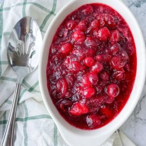

Time: 15 minutes, plus 30 minutes cooling Yield: Serves 9 people(makes 2¼ cups)
What combination of basic ingredients—cranberries, sweetener, and liquid—would give us a cranberry sauce recipe with a clean, pure cranberry flavor and with enough sweetness to temper the assertively tart fruit but not so much that the sauce would be cloying or candy-like? It turned out that simpler was better. White table sugar balanced the tartness of the cranberries without adding a flavor profile of its own. As for liquid, water—not cider, orange juice, or cranberry juice—won out in our cranberry sauce recipe. We also discovered that adding just a pinch of salt brought out an unexpected sweetness in the berries, heightening the flavor of the sauce overall.
Before You Begin
The cooking time in this recipe is intended for fresh berries. If you've got frozen cranberries, do not defrost them before use; just pick through them and add about 2 minutes to the simmering time.
To Make Ahead: Sauce can be covered and refrigerated up to 7 days; let stand at room temperature 30 minutes before serving.
Find more easy Thanksgiving recipes on our Homepage
Recipe courtesy of America's Test Kitchen.